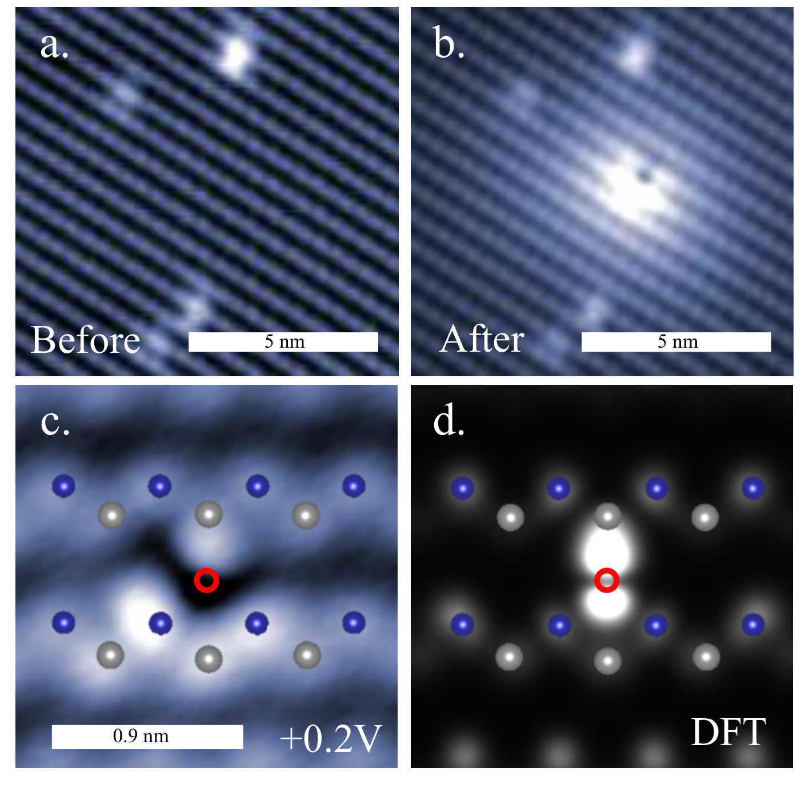
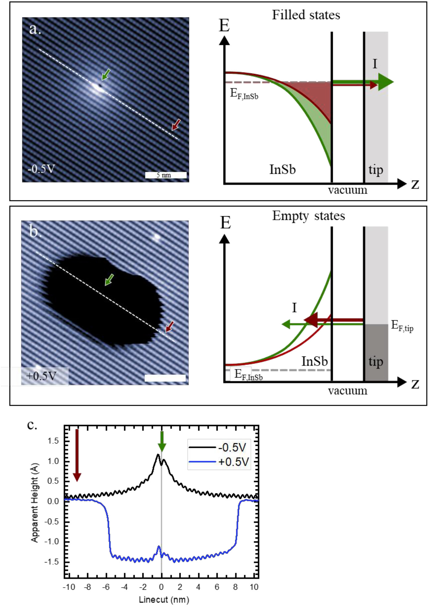
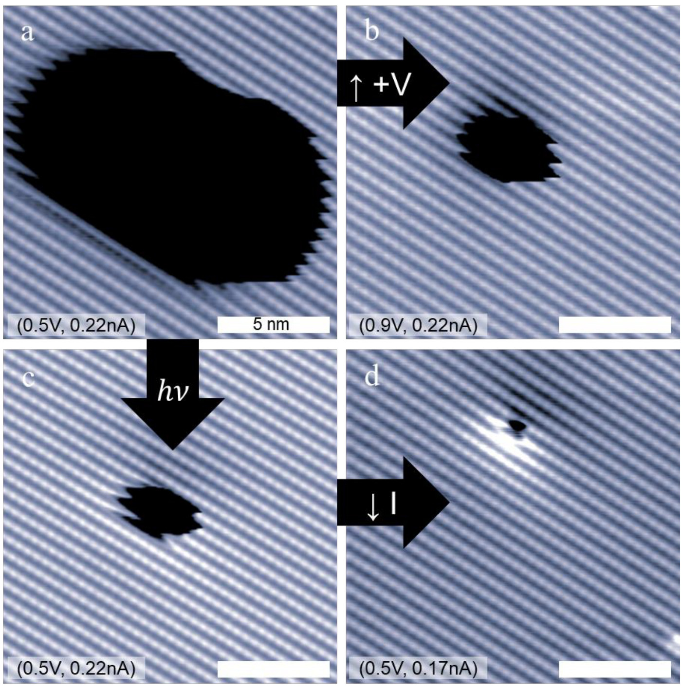
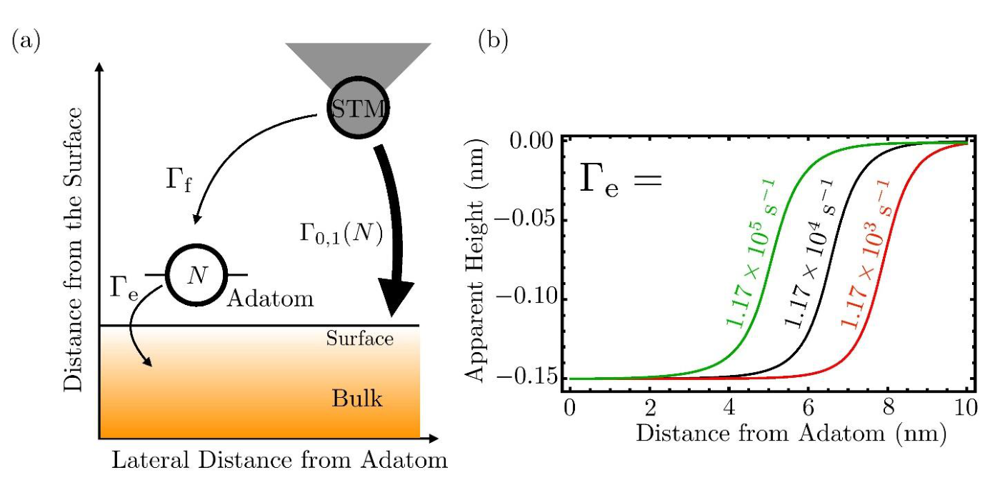
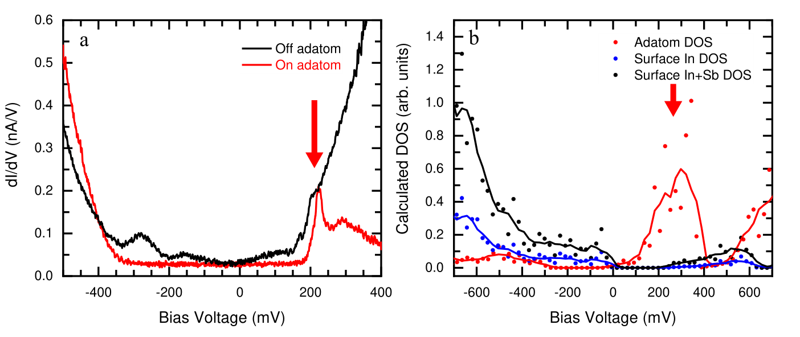
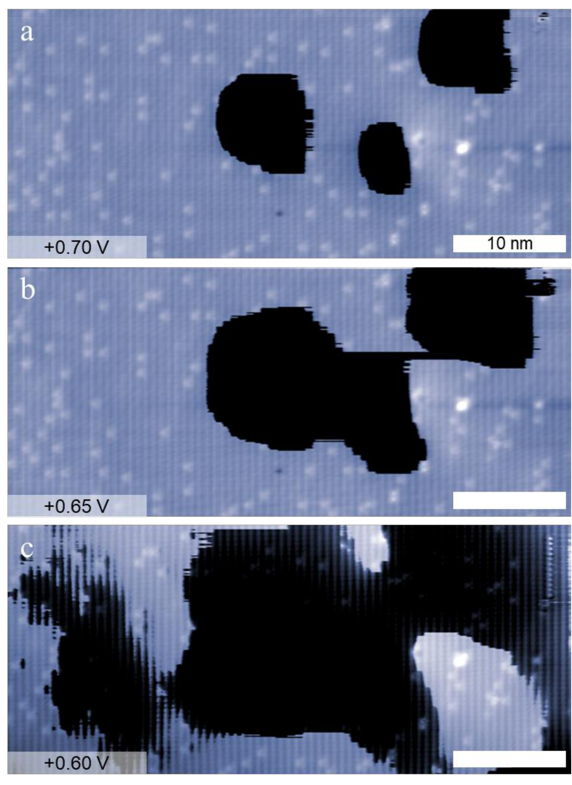

Published by IOP Publishing. This paper appeared in the Journal of Physics: Condensed Matter, published online on 28 May 2021 in volume 33, issue 27. That published article is the version of record, and it is the one to cite:
Mueller, S. M., Kim, D., McMillan, S. R., Tjung, S. J., Repicky, J. J., Gant, S., Lang, E., Bergmann, F., Werner, K., Chowdhury, E., Asthagiri, A., Flatté, M. E. & Gupta, J. A. (2021) Tunable tunnel barriers in a semiconductor via ionization of individual atoms. Journal of Physics: Condensed Matter 33, 275002. IOP Publishing. doi:10.1088/1361-648X/abf9bd
The published article is © 2021 IOP Publishing Ltd and nothing of it is reproduced here. This page renders the authors' manuscript as posted to arXiv, version 3 of 15 June 2020 (v1 was posted on 9 September 2019 and v2 on 6 March 2020). It predates the journal's acceptance and typesetting, so it can differ from the published article.
What this page is, and how far to trust it. The manuscript was written in Word and arXiv holds it only as a PDF, with no LaTeX source. So this page is a reconstruction rebuilt from that PDF, not a rendering of source: the text was extracted from it, the equations were retyped as LaTeX by hand from the page images, and the figures were cropped from the rendered pages. The text was then checked back against the PDF word by word and agrees to 99.86%. The remainder is a Γ that the PDF's text layer drops (restored here), an equation number, and one citation the text layer does not mark as a superscript. The mathematics cannot be checked that way, so the numbered equation and every inline expression were re-read against the page images instead. In the PDF the figures follow the references; here each sits after the paragraph that first discusses it. Where this page and the PDF disagree, the PDF is right.
The text refers throughout to Supporting Information (Figs. S1 and S2, the DFT details, the TIBB simulations and the rate model). That material is not in the arXiv PDF and is not included here.
Preprint: arXiv:1909.04156v3 (PDF), doi:10.48550/arXiv.1909.04156.
Introduction
As electronic devices miniaturize to the nanometer scale, their performance and reproducibility becomes increasingly impacted by single-impurity effects [1,2]. Nanoscale electronics, such as single atom transistors[3], are a realization of a new ‘solotronics’[4], where control and manipulation of individual impurity atoms in a material determines the device performance. In this context, the scanning tunneling microscope (STM) has been used for deterministic placement of dopants [refs] and to tune dopant binding energies via control of the local electrostatic environment [ref] [5] STM-induced ionization is also a promising demonstration for control, and has now been reported in various systems including dopants in GaAs[7–9], silicon dangling bonds [14–18], C60[10], cobalt on graphene[11], iron on Bi2Se3 [12] and vacancies in ZnO[13].
Here we report a tip-induced ionization effect that reveals how individual adatoms can be used to tune the tunneling conductance of an InSb(110) surface by two orders of magnitude over relatively large areas. When the adatoms are in a positive charge state, adatom induced band bending leads to a high-conductance accumulation region that can extend for >> 100 nm2 due to the very low binding energy of native donors in InSb. Under certain imaging conditions, the adatom can be switched to a neutral state by a tunneling electron from the STM tip, leading to a low-conductance depletion region appearing as a ‘crater’ feature in topographic STM images. The crater size can be tuned with bias voltage, set current, and photoillumination. The experimental results are confirmed by comparisons with DFT calculations and theoretical transport modeling. These studies provide insight into how single atoms can be harnessed in future nanoscale opto/electronic devices.
Methods
Experiments were conducted in a Createc LT-STM at 5K in ultrahigh vacuum ($\lt 10^{-10}\,\mathrm{mbar}$) using electrochemically etched Pt/Ir tips with an apex diameter $\lt 500\,\mathrm{nm}$. The InSb sample was a commercial bulk wafer, nominally undoped, but with n-type conductivity verified with Hall effect measurements. Typical donor species (e.g., S, Se, Te) in InSb are thought to occur at a concentration in the $10^{13-14}/\mathrm{cm}^{3}$ range, with a ~0.6 meV binding energy [29,30]. The sample was cleaved at ~100K in UHV, exposing the (110) surface, immediately before transfer into the STM. Tunneling spectroscopy was performed by adding a 10mV modulation to the sample bias. A lock-in detects the corresponding dI/dV (V) signal, which is related to the local density of states (LDOS). To tune band bending via the surface photovoltage (SPV) effect[19], light from a home-built laser (1550nm, 125 fs pulses at a 70 MHz repetition rate) was aligned to a side viewport on the STM chamber. An average laser power of 1.5 mW was directed at glancing incidence onto the sample with no additional focusing. The illuminated area on the sample was relatively large (~ 0.5 cm2), so that careful alignment of laser and tip was not necessary.
All plane wave DFT calculations were performed using the projector augmented wave pseudopotentials provided in the Vienna ab initio simulation package (VASP).[31–33] Further details of the calculations are provided in the Supporting Information, but here we note that the bulk InSb band gap with Perdew-Burke-Ernzerhof (PBE) [31] is more accurate than the hybrid HSE06 functional[32] value. Based on this result we chose the PBE functional for all InSb(110) surface calculations reported in the paper. Surface relaxation was performed with the lateral dimensions fixed to the bulk PBE lattice constant, a force criteria of 0.03 eV/Å, a plane wave cutoff of 400 eV and Γ-centered 4×4×2 k grids. We tested the four most likely adatom candidates (In, Sb, Pt, Ir) on the site indicated by the STM images. Bader charge analysis[34] was performed for each of the adatom candidates using the program from Henkelman and co-workers.[35–37] We obtain local density of states (LDOS) of the In adatom and bare InSb surface using the same settings (k-point grid, plane wave cutoff) as for the bare surface relaxation. Lastly, we simulated constant-height STM images of adatoms on the InSb surface using the Tersoff-Hamman model[38] for both empty and filled state conditions.
Results and discussion
Figure 1a shows an STM image of the clean InSb(110) surface under filled-state imaging conditions where the rows of Sb atoms are resolved[19], as are a few bright features which correspond to a low coverage of molecular adsorbates from the UHV chamber. Larger scale images of the surface (Fig. S1) show very few native defects such as surface/sub-surface dopants or atomic vacancies, which we attribute to the low defect concentration in our sample. During tip forming procedures (e.g., approach, voltage pulsing) that are typically used to sharpen STM tips, we were able to produce new point defects on the surface that we attribute to individual adatoms. For example, Figure 1b shows the same area as Figure 1a after a +8V pulse that dropped an adatom off the tip. This process can be repeated multiple times, resulting in atoms dropped from the tip one by one. We attribute these defects to individual adatoms based on their small apparent size and reproducible appearance. If the tip were depositing few-atom clusters, we would expect variations in number, size and shape of the features that were not observed in the experiment.
In prior work on GaAs, we found that the STM tip readily becomes terminated with the substrate material during standard tip forming procedures, and we could deposit Ga adatoms in a similar fashion. [23] We attribute the defect in Fig. 1b to an In adatom dropped off from the tip based on a comparison of our experimental data with DFT calculations. Discussed further in Supporting Information, we first determined an interstitial adsorption site from atomic resolution images where both In and Sb atomic rows could be identified (c.f., Fig. 1c). We then performed DFT calculations of the four most likely candidates (i.e., In, Sb, or Pt/Ir from the tip) on this high symmetry site. Bader charge analysis was used to estimate the charge state of the adatoms, and we find that of the four candidates, only Inad is positively charged, which agrees with the experimentally determined charge discussed below. The DFT-simulated STM image for interstitial Inad (Fig. 1d) is in reasonable qualitative agreement with experiment (Fig. 1c), reproducing the enhancement of contrast along the neighboring Sb row (similar to a previous study of Fead on InSb[21]), and the dark node centered on the atomic site. In further support of this assignment, we discuss below the good agreement between experimental and calculated local density of states for the In adatom, and include additional details in the Supporting Information.

We now discuss the charge state of the adatom and tip-induced ionization effects. Figure 2 shows that the adatom images as a protrusion at negative bias (Fig.2a), and under positive bias conditions as a dark ‘crater’ feature (Fig 2b). Linecuts of the apparent topography as indicated in these images are shown in Figure 2c. At negative bias, the apparent topography shows a gradual fall-off that extends for several nm away from the adatom site, much further than the atomic states associated with the adatom. This is commonly observed for charged species on III-V (110) surfaces[24] and we attribute the change in topography to adatom-induced band bending (AIBB)[23] of a positive point charge. To understand this connection, we note that the tunneling probability (and thus apparent height in STM images) depends on the total band bending (TBB) at the surface underneath the tip. In our experiments, TBB is the sum of several contributions as given by Eq. 1:
Here, tip induced band bending (TIBB) is a function of bias voltage V and tip height z, and switches sign at $V = V_{FB}$, where $V_{FB}$ is the flat band voltage. AIBB is a function of the adatom charge state q, and how far the adatom is from the tunneling apex, $r$; defect induced band bending (DIBB) represents contributions from the local environment (neglected here due to the low defect concentration in our samples), and SPV is the surface photovoltage contribution if the sample is being illuminated. The separation of photo-excited carriers in local electrostatic fields always acts to decrease the magnitude of TBB, regardless of its sign,[24] and the underlying dynamics can be spatially resolved near individual impurities.[6] Though it is difficult to determine TIBB directly, we performed a number of simulations using the SEMITIP Poisson solver from Feenstra[25] to estimate TIBB using typical values of tip sharpness, work function and bias voltage, which is discussed further in the Supporting Information. Based on the electron affinity of InSb and the estimated work function for the PtIr tips, we expect the flat band condition to be in the range $-0.2\,V \lt V_{FB} \lt 0.4\,V$ in our experiments.
The tunneling diagrams in Fig. 2d,e describe how the image contrast in Figs. 2a,b reflects the adatom charge state. Under the conditions in Fig. 2a (V < VFB), we expect TIBB < 0, which should cause an accumulation of conduction electrons under the tip in our n-type sample. This accumulation region moves in concert with the tip, and while tunneling of these electrons into the tip’s empty states determines the absolute tip-sample distance, it is largely invisible in the experimental images. The bright contrast near the adatom is consistent with a positive adatom charge state; $\mathit{AIBB} \lt 0$ increases accumulation near the adatom (green bands and arrow in Fig. 2d) and the tip moves further from the surface in the constant-current image. The gradual fall-off in Fig. 2c is consistent with a screened Coulomb potential [17], with a screening length of $\sim 3.5\,\mathrm{nm}$ which depends on the imaging conditions through TIBB (V, z) (c.f., Fig. S2).
The crater feature at positive voltage (Fig. 2b), shows an abrupt change in apparent height of 150 pm, indicating more than a tenfold reduction in tunneling conductance. The Sb rows are observed within the crater feature and appear continuous with the rows outside of the crater, indicating this is an electronic effect rather than a true topographic feature. The bottom of the crater is relatively flat (Fig. 2c, blue curve), and there is no longer-range fall off in apparent height near the adatom position, suggesting that the adatom is now in a neutral charge state. Under the conditions of Fig. 2b (i.e., V > VFB), $\mathit{TIBB} \gt 0$, which means that tunneling electrons from the tip must cross a depletion barrier to get to the InSb conduction band (Fig.2e, red arrow). This depletion region follows the tip as it is scanned, and is not readily apparent in STM imaging. Within a threshold distance, the STM tip switches the adatom to a neutral charge state. The abrupt increase in TBB when AIBB → 0 leads to an increased depletion barrier near the tip (green curve in Fig. 2d), so that the tip must get significantly closer to the surface to maintain a constant current, accounting for the apparent depth of the crater feature.

The abrupt change in charge state as the tip approaches the adatom is suggestive of a tip-induced ionization effect. Recently, disk- or ring-like features in STM images of impurities in other III-V semiconductors have been attributed to the ionization of individual dopants at a threshold value of TIBB that brings a dopant charge transition level into resonance with the host conduction or valence bands [7,9,26]. The size and shape of these features depend on factors which affect TIBB, including bias voltage, set current and the tip apex structure.
In Fig.3 we demonstrate a similar tunability of the crater feature. In our experiment, however an alternate ionization mechanism is necessary to consistently explain all the data. Compared to the crater under typical imaging conditions (Fig. 3a), we observed a significant reduction in size by three methods: (i) illuminating the sample with light (Fig. 3c), (ii) reducing the set tunneling current (Fig.3d), and (iii) increasing the bias voltage (Fig. 3b). Under illumination, SPV counteracts TIBB, so that the tip must move closer to the adatom to achieve the same threshold condition. Similarly, a reduced set current (Fig. 3d) moves the tip further from the surface and thus reduces TIBB, which shifts the threshold condition closer to the adatom as well.
While both of these observations are qualitatively consistent with a resonance TIBB ionization effect, the sensitivity of the crater to such small changes in set current and the reduction of the crater size with higher positive voltage (Fig. 3b) suggests an alternative mechanism is needed. Because we expect TIBB to further increase in magnitude with increasing voltage from +0.5V (Fig. 3a) to +0.9V (Fig. 3b), the threshold condition should be met at a larger tip-adatom distance (i.e., larger crater), in contrast to the observation. In the Supporting Information, we considered other possible scenarios given our uncertainties in VFB and other TIBB parameters. Our conclusion is that there is no resonance TIBB scenario that explains the trends in crater size with V, I while also being consistent with our assignment of a positive charge state when the tip is far away from the adatom, and a neutral charge state when the tip is brought nearby.

Following an approach developed for STM tip-induced ionization of dangling bonds in silicon[13,14,16], we propose a competing rate model and find good qualitative agreement between our observations and theoretical transport modeling (Fig. 4). Here, $\mathit{TIBB} \gt 0$ brings the adatom’s (+/0) charge transition level into a double-barrier configuration, resembling a quantum dot coupled to two leads[15]. Our model includes one channel for the tunneling current characterized by a filling rate from the tip, $\Gamma_f$, and an emptying rate into the bulk, $\Gamma_e$. Once the adatom state is filled by an electron from the tip tunneling through the vacuum barrier, it must escape into the bulk by tunneling through a surface depletion barrier, with a height and width that depend on TIBB. The time-averaged occupation of the state is given by $N = \frac{\Gamma_f}{(\Gamma_f + \Gamma_e)}$ and reaches a value of ½ when $\Gamma_f = \Gamma_e$. Direct tunneling into the InSb surface is considered as a second tunneling channel, with rates $\Gamma_0$, $\Gamma_1$ that depend on the adatom charge state (neutral and positive respectively) via AIBB.
Of these four rates, we can estimate $\Gamma_0$, $\Gamma_1$ from tunneling into InSb with the tip positioned inside / outside the crater region, and we calculate $\Gamma_f\,(r)$ using a Tersoff-Hamann approximation treating the terminating tip atom as a spherically symmetric wavefunction, and the adatom wavefunction with separate vertical (z0) and lateral (r0) decay constants. The filling/emptying rates are difficult to directly estimate from our STM data because they are sensitive to the measurement conditions and can easily lie outside the limited instrumental bandwidth (~ 1 kHz), but we note that ‘telegraph’ noise is observed in STM images under certain conditions that is suggestive of these dynamics.
Figure 4 shows a plot of the apparent height at constant current from this calculation as a function of the separation between tip and adatom. As shown in the figure, the apparent height transitions from a low to high value as the tip moves away from the adatom. The transition reflects the threshold separation where $\Gamma_f \sim \Gamma_e$. For $\Gamma_{e,f}$ ~ 10 kHz (black curve in Fig. 4b), our calculations predict that the transition should occur at a separation of ~ 5nm, which is in qualitative agreement with the experimental image in Fig. 3a. Applying this model now to the trends in Fig. 3, we note that under photoillumination, the width of the depletion barrier decreases, which increases $\Gamma_e$ but has no direct effect on $\Gamma_f$. The tip must therefore approach closer to the adatom to balance the filling and emptying rates, consistent with the reduced crater size in Fig. 3c and Fig. 4b (green curve). Reduction of set current directly decreases $\Gamma_f$, so that the tip must move closer to the adatom to increase the depletion barrier width and decrease $\Gamma_e$, consistent with Fig. 3d. Higher positive voltage affects both rates with opposite effects on crater size: $\Gamma_e$ decreases because of a wider depletion barrier, while $\Gamma_f$ decreases because tunneling electrons from the tip have a higher vacuum barrier into the adatom state (neglecting the possibility of inelastic electron tunneling). Reduction in $\Gamma_f$ decreases the crater size while a reduction in $\Gamma_e$ increases the crater size. The data in Fig. 3b are consistent with a net reduction in the $\Gamma_f/\Gamma_e$ ratio at higher positive voltage: the tip must approach the adatom to increase $\Gamma_f$ and achieve the threshold condition, resulting in a smaller crater. Further discussion of the model presented in Fig. 4 can be found in Supporting Information.

To identify the adatom charge transition level responsible for the ionization crater, we compared tunneling spectroscopy data with the tip positioned on pristine InSb (Fig. 5a, black) and the adatom (Fig. 5a, red). On InSb, there is a minimum in the measured dI/dV signal in the range ± 200 mV that roughly reflects the InSb band gap of 235 meV. A sharp rise at +200 mV is attributed to the InSb conduction band, and a more gradual rise below -200 mV reflects the valence band. Tunneling spectroscopy on the adatom (Fig. 5a, red) indicates enhanced conductance below -400 mV consistent with increased accumulation due to AIBB < 0, and a pronounced suppression of the conductance above +200 mV, consistent with tunneling through a depletion region when $\mathit{AIBB} = 0$. We interpret the peak at +220 mV as the (+/0) charge transition level, indicated with red arrow. The calculated local density of states (LDOS) from our DFT calculations show qualitatively similar behavior. The InSb(110) surface DOS (Fig. 5b, black) shows a minimum in the density of states around 0V. Importantly, in the In adatom density of states (Fig. 5b, red), a distinct peak appears near +250mV, which is in reasonable agreement with our tunneling spectroscopy results and is not present in the calculated DOS of the surface indium sites (Fig. 5b, blue).

Somewhat counterintuitively, the spatial extent of the crater feature sets a lower limit for the length scale over which the adatoms influence the tunneling conductivity of the InSb(110) surface. Because the crater corresponds to the region where $\mathit{AIBB} = 0$, the apparent height of the surface outside the crater must reflect $\mathit{AIBB} \neq 0$, or there would be no change in contrast due to the adatom charge state. To estimate the limit of the spatial extent, we show in Figure 6 a series of images as a function of voltage with a few adatoms deposited from the tip. With a modest decrease in bias voltage, the crater features eventually grow to exceed the entire scan area, indicating that individual adatoms influence the surface conduction over distances greater than 50 nm. We attribute the additional suppression of conductance on the left in Fig. 6c to filling from a point on the tip distinct from the tunneling apex. Although these points are further from the surface and don’t contribute much to $\Gamma_0$, $\Gamma_1$, they can be closer to the adatom and have higher $\Gamma_f$. This behavior further distinguishes ionization in the competing rates model [15–17,28] from the resonant TIBB models [7,9,26].

We attribute the remarkable spatial extent of the adatom-tunable conductance to the low concentration and binding energy ($\sim 0.6\,\mathrm{meV}$) of the residual donors in the undoped InSb crystal.[29] This ionization energy is comparable to $k_B T \sim 0.4\,\mathrm{meV}$ at 5K, which suggests that a sizeable fraction of the donors can be readily ionized thermally or by the electrostatic potentials of individual adatoms. Indeed, the Coulomb potential for a +e adatom falls below 0.6 meV at a distance of ~ 140 nm, assuming an effective static dielectric constant of $\varepsilon = 16.8$ for bulk InSb. This sensitivity distinguishes the ionization effect observed here from previous studies and suggests that undoped semiconductors with a low concentration of very shallow dopants may be well suited for future solotronic devices.
Conclusions
In this work we demonstrated tunability of the conductance of the InSb(110) surface by individual indium adatoms. Our experimental data are found to be in good agreement with DFT calculations and a transport model considering adatom and bulk tunneling channels. Similar effects to those described above were observed at step-edges and near larger nanoclusters that were occasionally deposited onto the surface during tip-forming, suggesting this is a more general phenomenon that is not specific to the particular adatom species. STM-based pulse methods as demonstrated recently for the Si dangling bonds [17,28] would allow for direct correlation of tunneling rates with the local environment, thus providing a microscopic picture of electronic transport.
// acknowledgements //
S.M.M. performed TIBB simulations, STM measurements, and data analysis. S.T, and J.R. performed STM measurements. S.G., D.K and A.A. performed the DFT calculations. S.R.M. and M.E.F. performed the transport modeling. E.L., F.B., K.W. and E.C. built and characterized the laser used for SPV measurements. All authors reviewed the manuscript and contributed to the writing of the text.
We acknowledge support from the Department of Energy under grant # DE-SC0016379. Laser construction and characterization by (E.L., F.B., K.W., E.C.) was funded by a grant from AFOSR (Grant # FA9550-12-1-0454). E.C and K.W acknowledges support from AFOSR grant FA9550-16-1-0069, and AFRL grant FA9451-14-1-0351. AA and DK were supported by NSF # 1809837 and acknowledge the Ohio Supercomputing Center for providing computational resources.
// references //
- 1Roy, S.; Asenov, A. Where Do the Dopants Go? Science 2005, 309 (5733), 388–390. https://doi.org/10.1126/science.1111104.
- 2Shinada, T.; Okamoto, S.; Kobayashi, T.; Ohdomari, I. Enhancing Semiconductor Device Performance Using Ordered Dopant Arrays. Nature 2005, 437 (7062), 1128–1131. https://doi.org/10.1038/nature04086.
- 3Fuechsle, M.; Miwa, J. A.; Mahapatra, S.; Ryu, H.; Lee, S.; Warschkow, O.; Hollenberg, L. C. L.; Klimeck, G.; Simmons, M. Y. A Single-Atom Transistor. Nature nanotechnology 2012, 7 (4), 242–246. https://doi.org/10.1038/nnano.2012.21.
- 4Koenraad, P. M.; Flatté, M. E. Single Dopants in Semiconductors. Nature materials 2011, 10 (2), 91–100. https://doi.org/10.1038/nmat2940.
- 5Lee, D. H.; Gupta, J. a. Tunable Field Control over the Binding Energy of Single Dopants by a Charged Vacancy in GaAs. Science (New York, N.Y.) 2010, 330 (6012), 1807–1810. https://doi.org/10.1126/science.1197434.
- 6Yoshida, S.; Aizawa, Y.; Wang, Z.-H.; Oshima, R.; Mera, Y.; Matsuyama, E.; Oigawa, H.; Takeuchi, O.; Shigekawa, H. Probing Ultrafast Spin Dynamics with Optical Pump-Probe Scanning Tunnelling Microscopy. Nature nanotechnology 2014, 9 (June), 588–593. https://doi.org/10.1038/nnano.2014.125.
- 7Marczinowski, F.; Wiebe, J.; Meier, F.; Hashimoto, K.; Wiesendanger, R. Effect of Charge Manipulation on Scanning Tunneling Spectra of Single Mn Acceptors in InAs. Physical Review B 2008, 77 (11), 115318. https://doi.org/10.1103/PhysRevB.77.115318.
- 8Bocquel, J.; Kortan, V. R.; Şahin, C.; Campion, R. P.; Gallagher, B. L.; Flatté, M. E.; Koenraad, P. M. Core-State Manipulation of Single Fe Impurities in GaAs with a Scanning Tunneling Microscope. Phys. Rev. B 2013, 87 (7), 075421. https://doi.org/10.1103/PhysRevB.87.075421.
- 9Lee, D.; Gupta, J. A. Tunable Control over the Ionization State of Single Mn Acceptors in GaAs with Defect-Induced Band Bending. Nano letters 2011, 11 (5), 2004–2007. https://doi.org/10.1021/nl2003686.
- 10Pradhan, N. a.; Liu, N.; Silien, C.; Ho, W. Atomic Scale Conductance Induced by Single Impurity Charging. Physical Review Letters 2005, 94 (7), 076801. https://doi.org/10.1103/PhysRevLett.94.076801.
- 11Brar, V. W.; Decker, R.; Solowan, H.-M.; Wang, Y.; Maserati, L.; Chan, K. T.; Lee, H.; Girit, Ç. O.; Zettl, A.; Louie, S. G.; Cohen, M. L.; Crommie, M. F. Gate-Controlled Ionization and Screening of Cobalt Adatoms on a Graphene Surface. Nature Physics 2010, 7 (1), 43–47. https://doi.org/10.1038/nphys1807.
- 12Song, C.-L.; Jiang, Y.-P.; Wang, Y.-L.; Li, Z.; Wang, L.; He, K.; Chen, X.; Ma, X.-C.; Xue, Q.-K. Gating the Charge State of Single Fe Dopants in the Topological Insulator Bi_{2}Se_{3} with a Scanning Tunneling Microscope. Physical Review B 2012, 86 (4), 045441. https://doi.org/10.1103/PhysRevB.86.045441.
- 13Zheng, H.; Kröger, J.; Berndt, R. Spectroscopy of Single Donors at ZnO(0001) Surfaces. Physical Review Letters 2012, 108 (7), 076801. https://doi.org/10.1103/PhysRevLett.108.076801.
- 14Labidi, H.; Taucer, M.; Rashidi, M.; Koleini, M.; Livadaru, L.; Pitters, J.; Cloutier, M.; Salomons, M.; Wolkow, R. A. Scanning Tunneling Spectroscopy Reveals a Silicon Dangling Bond Charge State Transition. New Journal of Physics 2015, 17 (7), 73023. https://doi.org/10.1088/1367-2630/17/7/073023.
- 15Livadaru, L.; Pitters, J.; Taucer, M.; Wolkow, R. A. Theory of Nonequilibrium Single-Electron Dynamics in STM Imaging of Dangling Bonds on a Hydrogenated Silicon Surface. Phys. Rev. B 2011, 84 (20), 205416. https://doi.org/10.1103/PhysRevB.84.205416.
- 16Taucer, M.; Livadaru, L.; Piva, P. G.; Achal, R.; Labidi, H.; Pitters, J. L.; Wolkow, R. a. Single-Electron Dynamics of an Atomic Silicon Quantum Dot on the H−Si(100)-(2x1) Surface. Physical Review Letters 2014, 112 (25), 256801. https://doi.org/10.1103/PhysRevLett.112.256801.
- 17Rashidi, M.; Lloyd, E.; Huff, T. R.; Achal, R.; Taucer, M.; Croshaw, J. J.; Wolkow, R. A. Resolving and Tuning Carrier Capture Rates at a Single Silicon Atom Gap State. ACS Nano 2017, 11 (11), 11732–11738. https://doi.org/10.1021/acsnano.7b07068.
- 18Schofield, S. R.; Studer, P.; Hirjibehedin, C. F.; Curson, N. J.; Aeppli, G.; Bowler, D. R. Quantum Engineering at the Silicon Surface Using Dangling Bonds. Nature communications 2013, 4, 1649. https://doi.org/10.1038/ncomms2679.
- 19Whitman, L.; Stroscio, J.; Dragoset, R.; Celotta, R. Scanning-Tunneling-Microscopy Study of InSb(110). Physical Review B 1990, 42 (11), 7288–7291.
- 20Gohlke, D.; Mishra, R.; Restrepo, O. D.; Lee, D.; Windl, W.; Gupta, J. Atomic-Scale Engineering of the Electrostatic Landscape of Semiconductor Surfaces. Nano letters 2013, 13 (6), 2418–2422. https://doi.org/10.1021/nl400305q.
- 21Khajetoorians, A. a; Chilian, B.; Wiebe, J.; Schuwalow, S.; Lechermann, F.; Wiesendanger, R. Detecting Excitation and Magnetization of Individual Dopants in a Semiconductor. Nature 2010, 467 (7319), 1084–1087. https://doi.org/10.1038/nature09519.
- 22Ebert, P. Nano-Scale Properties of Defects in Compound Semiconductor Surfaces. Surface Science Reports 1999, 33, 121–303.
- 23Lee, D.; Gohlke, D.; Benjamin, A.; Gupta, J. A. Influence of the Local Environment on Mn Acceptors in GaAs. Journal of Physics: Condensed Matter 2015, 27 (15), 154202. https://doi.org/10.1088/0953-8984/27/15/154202.
- 24Grafström, S. Photoassisted Scanning Tunneling Microscopy. Journal of Applied Physics 2002, 91 (4), 1717–1753. https://doi.org/10.1063/1.1432113.
- 25Feenstra, R. M. Electrostatic Potential for a Hyperbolic Probe Tip near a Semiconductor. Journal of Vacuum Science & Technology B: Microelectronics and Nanometer Structures 2003, 21 (5), 2080. https://doi.org/10.1116/1.1606466.
- 26Teichmann, K.; Wenderoth, M.; Loth, S.; Ulbrich, R.; Garleff, J.; Wijnheijmer, a.; Koenraad, P. Controlled Charge Switching on a Single Donor with a Scanning Tunneling Microscope. Physical Review Letters 2008, 101 (7), 076103. https://doi.org/10.1103/PhysRevLett.101.076103.
- 27Livadaru, L.; Pitters, J.; Taucer, M.; Wolkow, R. A. Theory of Nonequilibrium Single-Electron Dynamics in STM Imaging of Dangling Bonds on a Hydrogenated Silicon Surface. Physical Review B - Condensed Matter and Materials Physics 2011, 84 (20), 1–14. https://doi.org/10.1103/PhysRevB.84.205416.
- 28Rashidi, M.; Burgess, J. A. J.; Taucer, M.; Achal, R.; Pitters, J. L.; Loth, S.; Wolkow, R. A. Time-Resolved Single Dopant Charge Dynamics in Silicon. Nature Communications 2016, 7, 13258. https://doi.org/10.1038/ncomms13258.
- 29Kaplan, R. Optical Spectra of Donor Impurities in InSb in High Magnetic Fields. Phys. Rev. 1969, 181 (3), 1154–1162. https://doi.org/10.1103/PhysRev.181.1154.
- 30Semiconductors — Basic Data, 2nd ed.; Madelung, O., Ed.; Springer-Verlag: Berlin Heidelberg, 1996. https://doi.org/10.1007/978-3-642-97675-9.
- 31Blöchl, P. E. Projector Augmented-Wave Method. Phys. Rev. B 1994, 50 (24), 17953–17979. https://doi.org/10.1103/PhysRevB.50.17953.
- 32Kresse, G. Ab Initio Molecular Dynamics Applied to the Dynamics of Liquid Metals and to the Metal-Non-Metal Transition. Journal of Non-Crystalline Solids 1996, 205–207, 833–840. https://doi.org/10.1016/S0022-3093(96)00314-6.
- 33Kresse, G.; Hafner, J. Ab Initio Molecular Dynamics for Liquid Metals. Phys. Rev. B 1993, 47 (1), 558–561. https://doi.org/10.1103/PhysRevB.47.558.
- 34Atoms in Molecules: A Quantum Theory; International Series of Monographs on Chemistry; Oxford University Press: Oxford, New York, 1994.
- 35Henkelman, G.; Arnaldsson, A.; Jónsson, H. A Fast and Robust Algorithm for Bader Decomposition of Charge Density. Computational Materials Science 2006, 36 (3), 354–360. https://doi.org/10.1016/j.commatsci.2005.04.010.
- 36Sanville, E.; Kenny, S. D.; Smith, R.; Henkelman, G. Improved grid-based algorithm for Bader charge allocation. Journal of Computational Chemistry 2007, 28 (5), 899–908. https://doi.org/10.1002/jcc.20575.
- 37Tang, W.; Sanville, E.; Henkelman, G. A Grid-Based Bader Analysis Algorithm without Lattice Bias. J. Phys.: Condens. Matter 2009, 21 (8), 084204. https://doi.org/10.1088/0953-8984/21/8/084204.
- 38Tersoff, J.; Hamann, D. R. Theory of the Scanning Tunneling Microscope. Phys. Rev. B 1985, 31 (2), 805–813. https://doi.org/10.1103/PhysRevB.31.805.